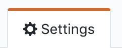
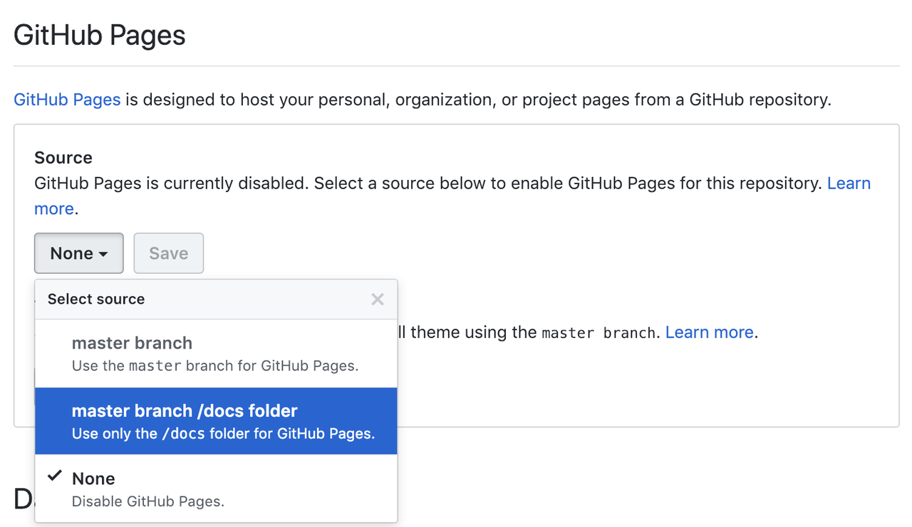
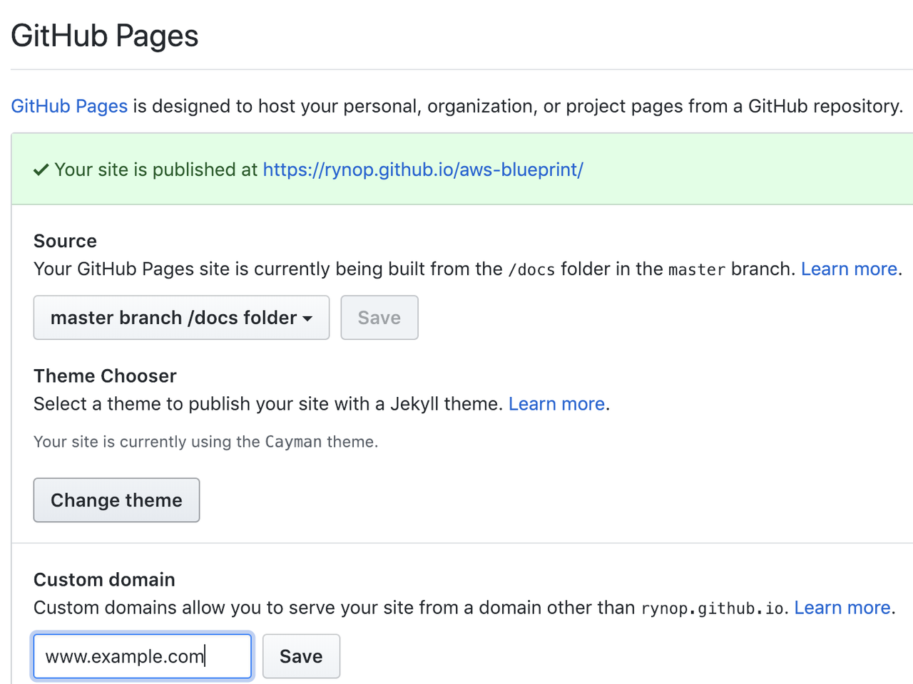
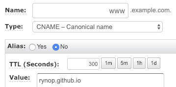
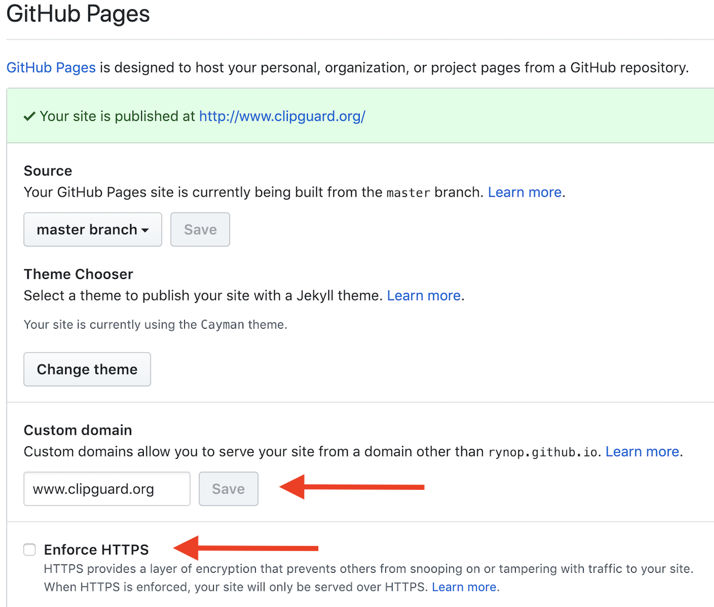
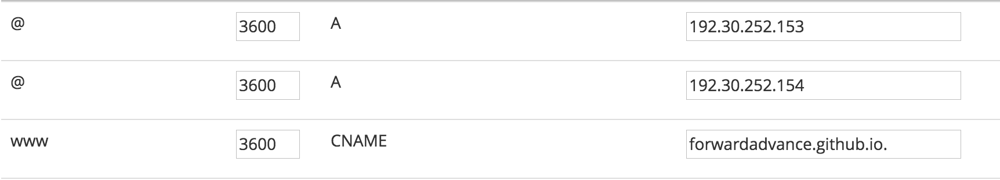

Custom domain for GitHub project pages
I have a gh-pages branch in one of my http://github.com repos. The GitHub
project pages works fine if I go to http://myuser.github.com/myrepo
I want to setup a custom domain (myexample.com) that will serve up this
project pages. I want both myexample.com and www.myexample.com to
serve up these project pages.
GitHub pages help says to make an A record and a CNAME record in your DNS. The A record makes sense, but I do not know what CNAME record to make in my DNS.
The gh-pages docs say to make a CNAME record for 'charlie.github.com'
which is a user page repository. I do not have a user page repository - I only
have a project repository and a gh-pages branch that I want to use for
myexample.com and www.myexample.com.
Do I need to make a user page repository just so I can use my project page for www.myexample.com and myexample.com?
I would just try it, but I want to make sure this will work as I already have www.myexample.com live and don't want to make a mistake.
I emailed GitHub support and their response was
You can't have both point to the same gh-pages as far as I know.
I find it hard to believe they would only support A records for project pages.
Has anyone successfully done this before?
Answer
1/23/19 UPDATE:
Things have changed quite a bit (for the better) since my last answer. This updated answer will show you how to configure:
- Root apex (example.com)
- Sub-domain (www.example.com)
- HTTPS (optional but strongly encouraged)
In the end, all requests to example.com will be re-directed to
https://www.example.com (or http:// if you choose NOT to use HTTPS). I always
use www as my final landing. Why(1,2), is for another discussion.
This answer is long but it is not complicated. I was verbose for clarity as the GitHub docs on this topic are not clear or linear.
Step 1: Enable GitHub pages in GitHub settings
- From your repo, click on the  tab
- Scroll down to the
GitHub Pagessection. You have two options:  - Choosing
master branchwill treat/README.mdas your webindex.html. Choosingmaster branch /docs folderwill treat/docs/README.mdas your webindex.html. - Choose a theme.
- Wait a minute while GitHub publishes your site. Verify it works by clicking on the link next to
Your site is ready to be published at
Step 2: Specify custom domain in GitHub settings
Enter your custom domain name here and hit save: 
This is a subtle, but important step.
- If the custom domain you added to your GitHub Pages site is
example.com, thenwww.example.comwill redirect toexample.com - If the custom domain you added to your GitHub Pages site is
www.example.com, thenexample.comwill redirect towww.example.com.
As mentioned before, I recommend always landing at www so I entered
www.example.com as pictured above.
Step 3: Create DNS entries
In your DNS provider's web console, create four A records and one CNAME.
-
ARecords for@(aka root apex):
Some DNS providers will have you specify @, others (like AWS Route 53) you
will leave the sub-domain blank to indicate @. In either case, these are the
A records to create:
185.199.108.153 185.199.109.153 185.199.110.153 185.199.111.153
Check the Github docs to confirm these are the most up-to-date IPs.
- Create a
CNAMErecord to point www.example.com toYOUR-GITHUB-USERNAME.github.io.
This is the most confusing part.
Note the YOUR-GITHUB-USERNAME NOT the GitHub repo name! The value of
YOUR-GITHUB-USERNAME is determined by this chart.
For a User pages site (most likely what you are), CNAME entry will be
username.github.io, ex: 
For a Organization pages site, CNAME entry will be orgname.github.io,
ex: 
Step 5: Confirm DNS entries
-
Confirm your
Arecords by runningdig +noall +answer example.com. It should return the four185.x.x.xIP addresses you entered. -
Confirm your
CNAMErecord by runningdig www.example.com +nostats +nocomments +nocmd. It should return aCNAME YOUR-GITHUB-USERNAME.github.io
It may take an hour or so for these DNS entries to resolve/propagate. Once
they do, open up your browser to http://example.com and it should re-direct
to http://www.example.com
Step 6: SSL (HTTPS) Configuration. Optional, but highly recommended
After you have the custom domain working, go back to the repo settings. If you already have the settings page open, hard refresh the page.
If there is a message under the Enforce HTTPS checkbox, stating that it is
still processing you will need to wait. You may also need to hit the save
button in the Custom domain section to kick off the Enforce HTTPS
processing.
Once processing is completed, it should look like this:

Just click on the Enforce HTTPS checkbox, and point your browser to
https://example.com. It should re-direct and open https://www.example.com
THATS IT!
GitHub will automatically keep your HTTPS cert up-to-date AND should handle
the apex to www redirect over HTTPS.
Suggest
Overview
The documentation is a little confusing when it comes to project pages , as opposed to user pages. It feels like you should have to do more, but actually the process is very easy.
It involves:
- Setting up 2 static A records for the naked (no www) domain.
- Creating one CNAME record for www which will point to a GitHub URL. This will handle www redirection for you.
- Creating a file called CNAME (capitalised) in your project root on the gh-pages branch. This will tell Github what URL to respond to.
- Wait for everything to propagate.
What you will get
Your content will be served from a URL of the form http://nicholasjohnson.com.
Visiting http://www.nicholasjohnson.com will return a 301 redirect to the naked domain.
The path will be respected by the redirect, so traffic to http://www.nicholasjohnson.com/angular will be redirected to http://nicholasjohnson.com/angular.
You can have one project page per repository, so if your repos are open you can have as many as you like.
Here's the process:
1. Create A records
For the A records, point @ to the following ip addresses:
@: 185.199.108.153 @: 185.199.109.153 @: 185.199.110.153 @: 185.199.111.153
These are the static Github IP addresses from which your content will be served.
2. Create a CNAME Record
For the CNAME record, point www to yourusername.github.io. Note the trailing full stop. Note also, this is the username, not the project name. You don't need to specify the project name yet. Github will use the CNAME file to determine which project to serve content from.
e.g.
www: forwardadvance.github.io.
The purpose of the CNAME is to redirect all www subdomain traffic to a GitHub page which will 301 redirect to the naked domain.
Here's a screenshot of the configuration I use for my own site http://nicholasjohnson.com:

3. Create a CNAME file
Add a file called CNAME to your project root in the gh-pages branch. This should contain the domain you want to serve. Make sure you commit and push.
e.g.
nicholasjohnson.com
This file tells GitHub to use this repo to handle traffic to this domain.
4. Wait
Now wait 5 minutes, your project page should now be live.